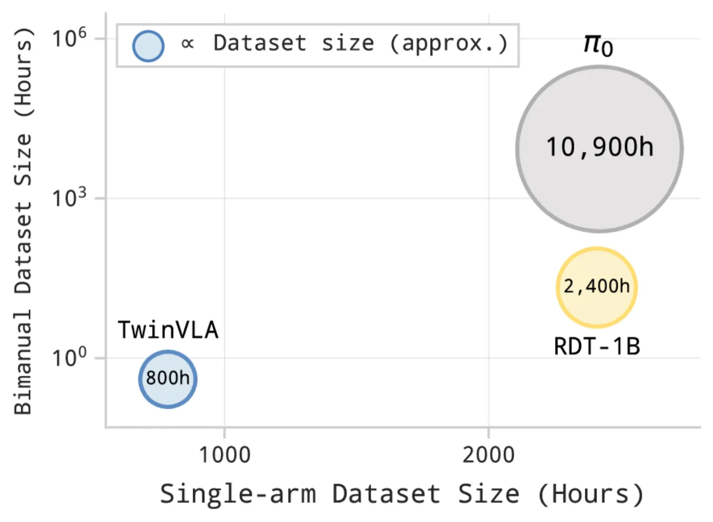
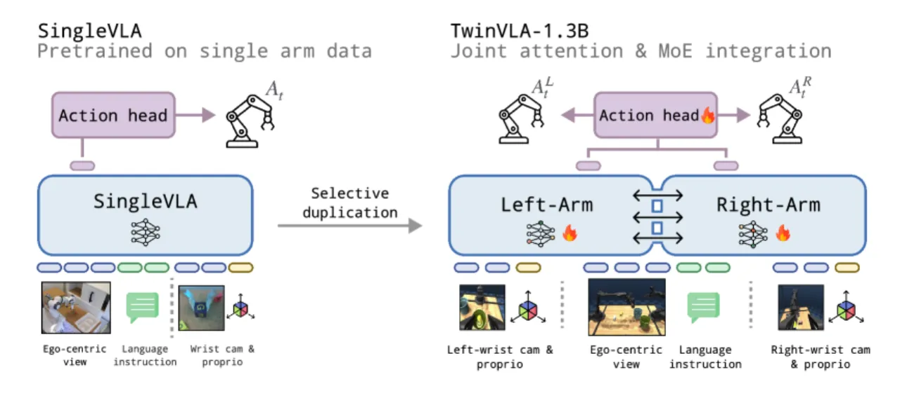
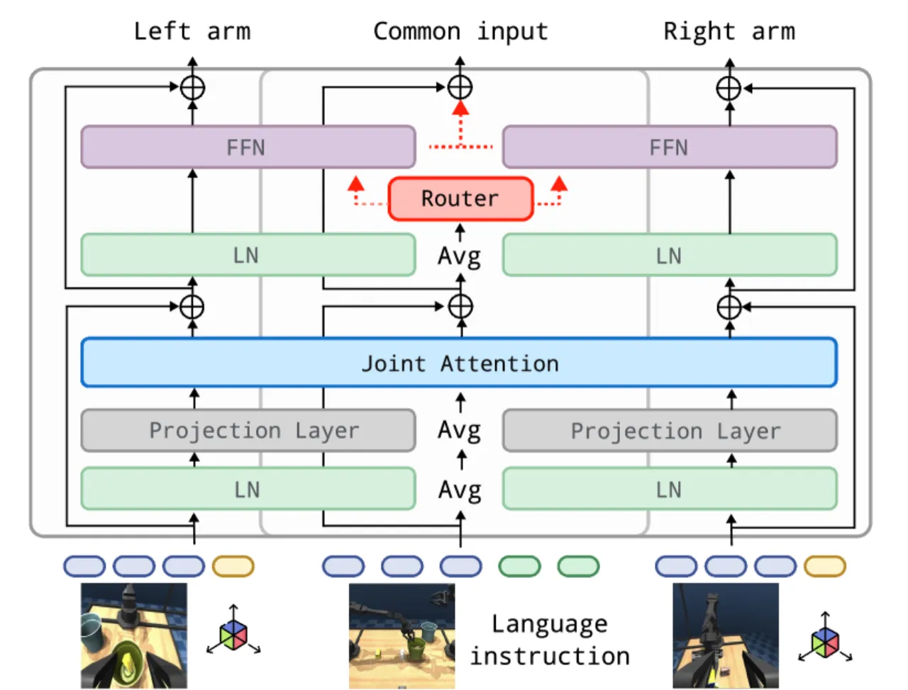
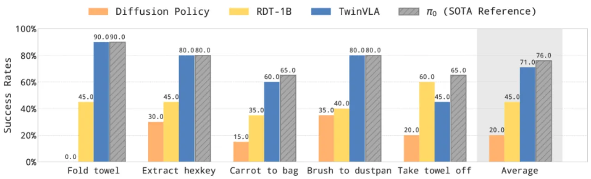
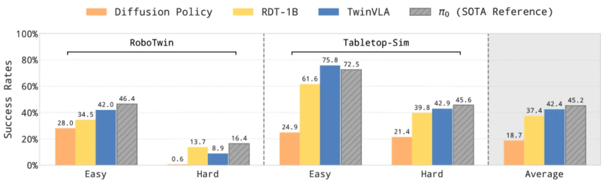
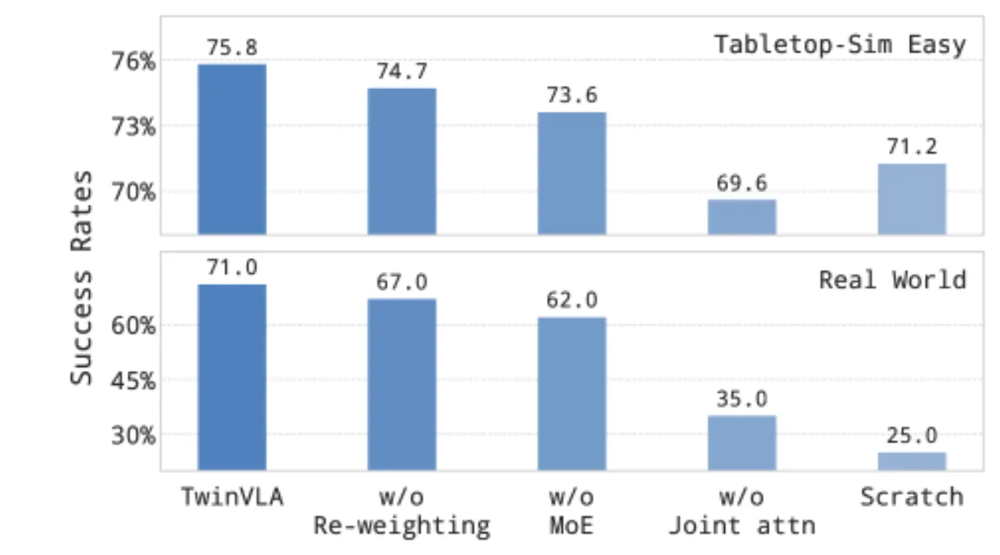

TwinVLA 提出了一种模块化框架：将两个预训练单臂 VLA 模型通过轻量级 Joint Attention 机制组合，无需大规模双臂数据预训练即可实现高质量双臂协作操作。相比 RDT-1B（需 1,440 H100 GPU-days）和 π₀（依赖 10,900+ 小时专有数据），TwinVLA 仅需 25 H100 GPU-days 和 ~800h 单臂数据 + 50 条双臂演示，实现了显著的数据与计算效率优势。
双臂操作是机器人研究的重要挑战，但大规模双臂数据集极为稀缺。现有的整体式（monolithic）双臂 VLA 模型需要海量数据与算力预训练，制约了实际应用。
"RDT-1B required massive pretraining and fine-tuning (reportedly a month on 48 H100 GPUs)... π₀ relies on a 10,000-hour proprietary dataset."
论文的核心洞察来自神经科学："human bimanual manipulation is the coordination of arm-specific motor primitives rather than a single monolithic controller"，人类双臂由专用神经回路协调同步。TwinVLA 基于此，将两个独立的单臂 VLA 模型通过轻量 Joint Attention 连接，利用公开丰富的单臂数据完成迁移，"eliminating the need for large-scale bimanual pretraining"。

TwinVLA 复用两个预训练的 0.8B SingleVLA 的 VLM backbone，共享视觉编码器和 DiT action head，通过三个轻量组件实现跨臂协作：Joint Attention、Mixture-of-Experts（MoE）和 Attention Re-weighting。

每个 Transformer 块中，将两个 backbone 的 Q、K、V 拼接后做统一 self-attention，再拆分回各自流："Concatenate the Q, K, V from both backbones, perform self-attention, and subsequently split the outputs back to their respective streams." 这使得左右臂 token 可直接相互感知，实现双臂协调。消融实验表明，去掉 Joint Attention 后真实环境性能下降 27%。

对共享输入（语言、图像），两个 backbone 的 FFN 以可学习权重加权融合：wleft·FFNleft(x) + (1−wleft)·FFNright(x)，替代重复计算，VRAM 节省 21%。
微调时对注意力权重引入正则项，使模型在学习双臂协调的同时保留单臂预训练知识，避免灾难性遗忘。去掉该组件导致真实环境成功率下降 4%。
共享的 DiT Action Head 以 conditional flow matching 为训练目标，从带噪声动作 chunk 预测参考流（reference flow）至目标动作 chunk，生成左右臂的协同动作序列。训练数据仅使用公开单臂数据集（OXE）+ 少量双臂演示。
在真实世界（5 任务，每任务 20 次 rollout）和两个模拟基准（RoboTwin 2.0 共 50 任务、Tabletop-Sim 共 5 任务）上与 RDT-1B、π₀、DP 对比，同时测试数据效率、鲁棒性和语言跟随能力。
使用 Anubis 双臂机器人执行折叠毛巾（fold towel）、提取六角扳手、放胡萝卜入袋等 5 个任务，各任务 20 次 rollout。


| 条件 | RDT-1B | π₀ | TwinVLA |
|---|---|---|---|
| Low Light（低光照） | 15.0% | 40.0% | 45.0% |
| With Distractors（干扰物） | 15.0% | 60.0% | 25.0% |
在低光照条件下 TwinVLA（45.0%）超越 π₀（40.0%）；在有干扰物情况下 π₀ 表现最佳（60.0%），TwinVLA 表现（25.0%）优于 RDT-1B（15.0%）。

| 变体 | 模拟成功率变化 | 真实环境成功率变化 |
|---|---|---|
| TwinVLA（完整） | — | — |
| 去掉 Attention Re-weighting | −1.1% | −4.0% |
| 再去掉 MoE | −1.1% | −5.0% |
| 再去掉 Joint Attention | −4.0% | −27.0% |
| 从头训练（Scratch） | −4.6% | −46.0% |
Joint Attention 对真实环境影响最大（−27%），说明跨臂信息交互是双臂协调的核心；从头训练剧烈下降（−46%）印证了预训练知识迁移的不可或缺性。
论文明确指出："Generalization remains limited due to the visual disparity of two arms, which differs from the single-arm pretraining distribution." 双臂摄像头视角与单臂预训练数据存在视觉域差异，限制了模型在新场景中的泛化能力。
论文指出未来工作应"explore action representations beyond absolute end-effector poses"，当前动作表示为绝对末端位姿，在不同机器人或任务空间下适应性有限。
在有干扰物的鲁棒性测试中，TwinVLA（25.0%）明显低于 π₀（60.0%），说明视觉分心鲁棒性仍有提升空间，可能与双臂视野的数据稀缺性有关。
虽然 TwinVLA 大幅降低了双臂数据需求（仅需 50 条演示），但仍需目标双臂数据进行 fine-tuning，完全 zero-shot 双臂迁移尚未实现。